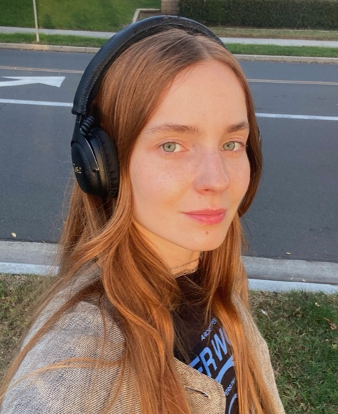

2026–now
Postdoctoral Researcher, Humboldt Research Fellow
Mind-Body-Emotion group, Max Planck Institute for Human Cognitive and Brain Sciences, hosted by the Max Planck Institute for Human Development, Berlin

I study how loneliness and social connection show up in the body. I combine physiological measurements in and out of the lab, experience sampling in everyday life and immersive virtual reality.
I am a Humboldt Postdoctoral Fellow in Michael Gaebler's Mind-Body-Emotion group at the Max Planck Institute for Human Cognitive and Brain Sciences. The group is hosted by the Max Planck Institute for Human Development in Berlin. In my fellowship project I study interpersonal distance and loneliness, both in immersive virtual reality and in everyday life, measured with experience sampling.
I did my PhD at the Institute of Psychology, Polish Academy of Sciences. It looked at how loneliness in young adults relates to the way they process social information and to parasympathetic activity, the part of the nervous system that helps the body regulate itself.
I think that science should serve society and not stay in the lab, so I try to share it with the public, often together with artists and NGOs.
ambulatory ECG and HRV · ecological momentary assessment · immersive VR · meta-analysis · Python · R
* shared first authorship